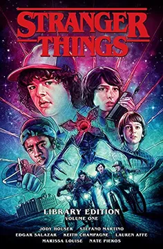
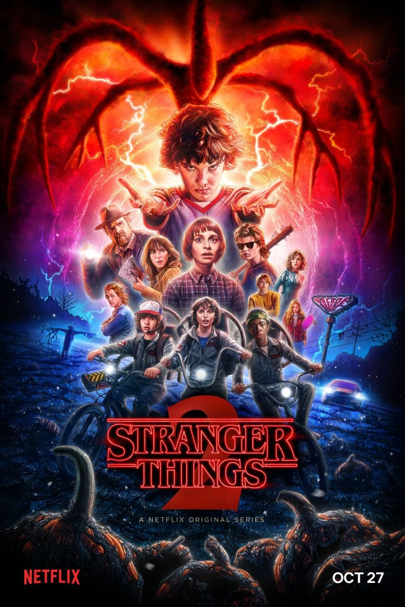
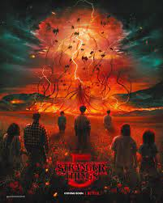
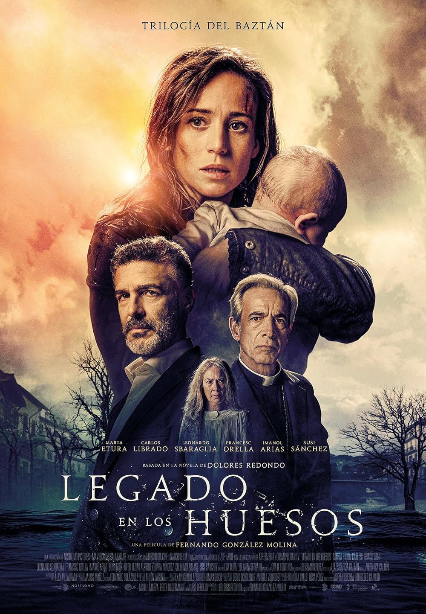
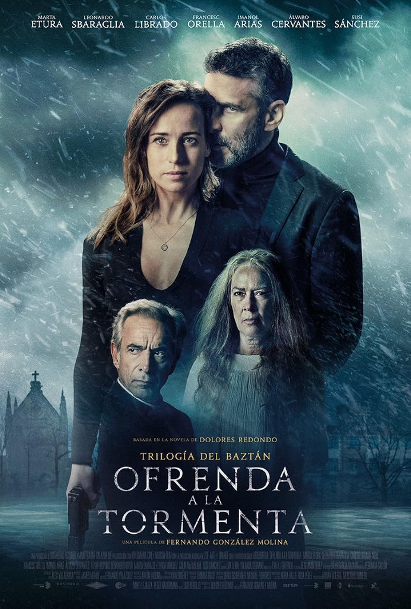
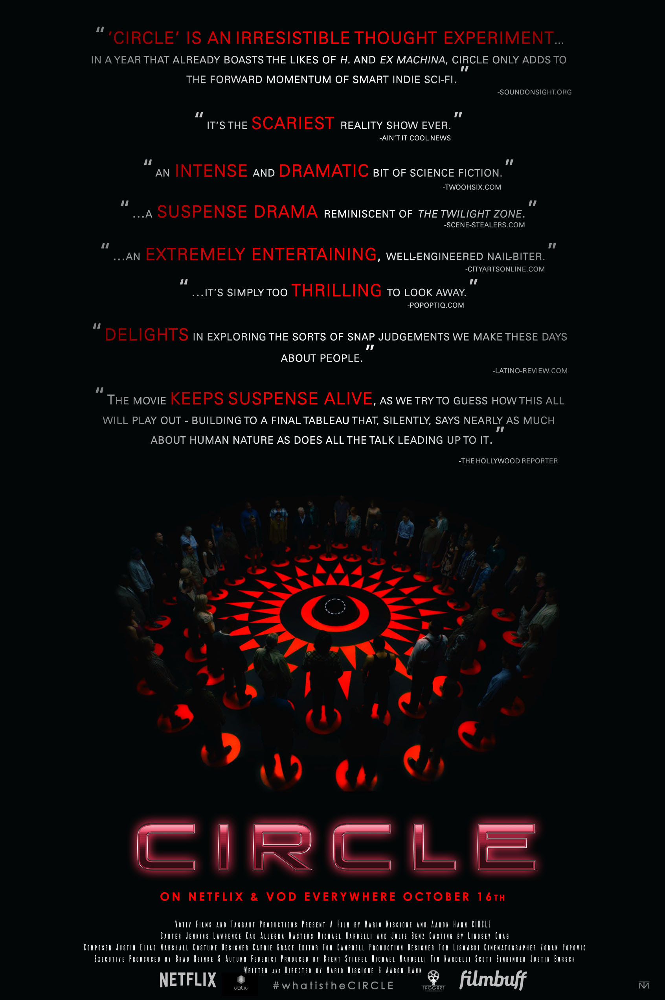
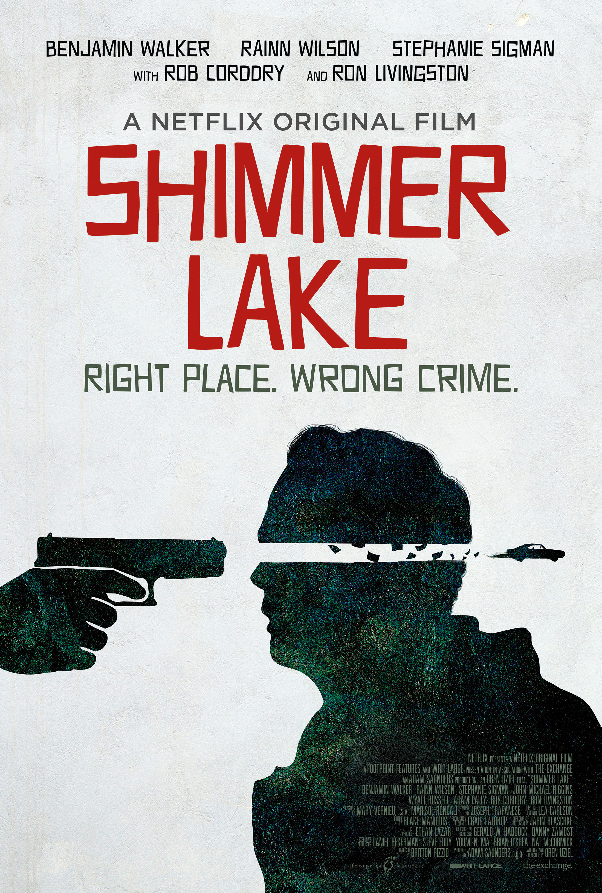
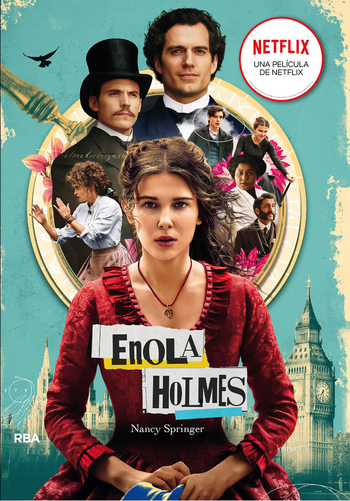

Los juegos del Hambre
Una aventura épica llena de sorpresas.
Autor: Suzanne Collins
Género: A Ciencia ficción, aventura distópica
Sinopsis: En un futuro post-apocalíptico, la nación de Panem organiza los Juegos del Hambre, un evento anual donde un chico y una chica de cada distrito deben luchar hasta la muerte. Katniss Everdeen se ofrece como tributo en lugar de su hermana menor, iniciando una lucha por la supervivencia y la rebelión.
En Llamas
Una aventura épica llena de sorpresas.
Autor: Suzanne Collins
Género: Ciencia ficción, aventura distópica
Sinopsis: Tras ganar los Juegos, Katniss se convierte en símbolo de resistencia. Los 75º Juegos del Hambre, conocidos como el Vasallaje de los Veinticinco, reúnen a tributos anteriores, poniendo a Katniss y Peeta nuevamente en peligro.
Sinsajo
Una aventura épica llena de sorpresas.
Autor: Suzanne Collins
Género: Ciencia ficción, aventura distópica
Sinopsis:La rebelión contra el Capitolio se intensifica. Katniss asume el rol de "Sinsajo", el símbolo de la revolución, enfrentando desafíos personales y políticos en la guerra por la libertad.

Sinsajo part 2
Una aventura épica llena de sorpresas.
Autor: Suzanne Collins
Género: Ciencia ficción, aventura distópica
Sinopsis:La rebelión contra el Capitolio se intensifica. Katniss asume el rol de "Sinsajo", el símbolo de la revolución, enfrentando desafíos personales y políticos en la guerra por la libertad.

Pájaros cantores y Serpientes
Una aventura épica llena de sorpresas.
Autor: Suzanne Collins
Género: Ciencia ficción, aventura distópica
Sinopsis: Situada 64 años antes de los eventos originales, narra la juventud de Coriolanus Snow, futuro presidente de Panem, y su participación en los 10º Juegos del Hambre.

Stranger Things
Una aventura épica llena de sorpresas.
Autor:Matt y Ross Duffer
Género:Misterio, thriller
Sinopsis:
En la década de 1980, en el pueblo ficticio de Hawkins, Indiana, un grupo de niños enfrenta fenómenos paranormales y criaturas de una dimensión alterna llamada "El Otro Lado".

Stranger Things
Una aventura épica llena de sorpresas.
Autor:Matt y Ross Duffer
Género:Misterio, thriller
Sinopsis:La inspectora Amaia Salazar regresa a su pueblo natal en Navarra para investigar una serie de asesinatos que parecen estar relacionados con leyendas locales.

Stranger Things
Una aventura épica llena de sorpresas.
Autor:Matt y Ross Duffer
Género:Misterio, thriller
Sinopsis:Amaia Salazar continúa su investigación mientras enfrenta secretos familiares y oscuros misterios del pasado.

Stranger Things
Una aventura épica llena de sorpresas.
Autor:Matt y Ross Duffer
Género:Misterio, thriller
Sinopsis:Amaia Salazar se enfrenta a una conspiración que involucra rituales y asesinatos, mientras busca la verdad detrás de los crímenes.

Stranger Things
Una aventura épica llena de sorpresas.
Autor:Matt y Ross Duffer
Género:Misterio, thriller
Sinopsis:Un joven establece una amistad con un anciano millonario, y tras su muerte, descubre que puede comunicarse con él a través de un teléfono móvil.

El guardian Invisible
Una aventura épica llena de sorpresas.
Autor: Juan Pérez
Género: Aventura
Sinopsis: Un joven se embarca en un viaje que cambiará su vida para siempre.

Legado de los Huesos
Una aventura épica llena de sorpresas.
Autor: Dolores Redondo
Género: Misterio
Sinopsis: En esta segunda entrega de la Trilogía del Baztán, la inspectora Amaia Salazar regresa al valle de Baztán, en Navarra, para enfrentarse a un nuevo caso inquietante. Durante un juicio en el que ella debe testificar, el acusado se suicida dejando una nota con una sola palabra: "Tarttalo".

Ofrenda a la Tormenta
Una aventura épica llena de sorpresas.
Autor: Dolores Redondo
Género: Novela negra / Thriller / Misterio
Sinopsis: Después de los impactantes eventos de Legado de los huesos, la inspectora Amaia Salazar continúa enfrentándose a una serie de muertes misteriosas en el valle de Baztán. Esta vez, las víctimas son bebés que mueren en sus cunas, en aparentes casos de síndrome de muerte súbita infantil.
Mr harrigan's phone
Una aventura épica llena de sorpresas.
Autor: Stephen King
Género: Terror
Sinopsis: La historia sigue a Craig, un joven que trabaja para el anciano Mr. Harrigan, un hombre rico y solitario. Craig le regala a Mr. Harrigan un teléfono móvil antiguo, y ambos desarrollan una relación especial basada en la comunicación a través de ese dispositivo.
Maldita
Una aventura épica llena de sorpresas.
Autor: Thomas Wheeler
Género: Fantasía épica / Reimaginación mitológica
Sinopsis: Maldita cuenta la historia de Nimue, una joven druida con poderes mágicos, que tras el ataque a su aldea recibe la misión de entregar una espada antigua a un hechicero legendario. En su camino, se une al mercenario Arturo y a los Inefables para enfrentarse a fuerzas oscuras y desafiar el poder establecido.

Secretos del Pasado
Una aventura épica llena de sorpresas.
Autor: Checko E. Martínez
Género: Checko E. Martínez
Sinopsis:Ryan Goth se muda con su familia a Terrance Mullen y descubre un mundo sobrenatural. Enterado de que es uno de los Cinco Guerreros del Círculo Protector, debe encontrar a los otros miembros y enfrentar peligros que amenazan su vida y a los suyos.

Circle
Una aventura épica llena de sorpresas.
Autor: Thomas Wheeler
Género: Fantasía épica / Reimaginación mitológica
Sinopsis: Nimue, una joven druida marginada, debe entregar una antigua espada a un hechicero tras el ataque a su aldea. En su camino, se une al mercenario Arturo y a los Inefables para enfrentar fuerzas oscuras y desafiar el poder establecido.
XX
Una aventura épica llena de sorpresas.
Autor: Annie Clark
Género: Terror, horror, antología.
Sinopsis: "XX" es una de terror antológica con cuatro relatos dirigidos por mujeres, que exploran distintos tipos de miedo, desde lo psicológico hasta lo sobrenatural, mostrando una perspectiva femenina única en el género.

Shimmer Lake
Una aventura épica llena de sorpresas.
Autor: Oren Uziel
Género: Thriller, crimen, misterio
Sinopsis: Se desarrolla al revés en el tiempo, comenzando con un evento final y retrocediendo para revelar los hechos que llevaron a ese punto. La historia sigue a un sheriff local mientras investiga el robo a un banco y trata de capturar a un criminal astuto y peligroso.
.png)
The Queen Gambit
Una aventura épica llena de sorpresas.
Autor: Walter Tevis
Género: Drama
Sinopsis: The Queen’s Gambit narra la vida de Beth Harmon, una joven huérfana con un talento excepcional para el ajedrez, quien enfrenta sus luchas internas mientras asciende hasta convertirse en campeona mundial.

Brigerton
Una aventura épica llena de sorpresas.
Autor: Julia Quinn
Género: Drama romántico
Sinopsis: Bridgerton narra la vida de la aristocrática familia Bridgerton en la Londres de la Regencia, mostrando sus romances, secretos y escándalos en un mundo lleno de intrigas y pasiones.

Brigerton
Una aventura épica llena de sorpresas.
Autor: Julia Quinn
Género: Romance histórico
Sinopsis: En la alta sociedad londinense durante la Regencia inglesa, la familia Bridgerton enfrenta escándalos, romances y secretos. Cada miembro de la familia vive sus propios enredos amorosos mientras navegan las estrictas normas sociales de la época.

Brigerton
Una aventura épica llena de sorpresas.
Autor: Julia Quinn
Género: drama romántico
Sinopsis: Los Bridgerton sigue la vida de ocho hermanos pertenecientes a una influyente familia aristocrática en la Londres de la Regencia. A través de sus amores, secretos y escándalos, la serie explora las complejidades del romance y las expectativas sociales en una época marcada por la rigidez de la alta sociedad.

Enola Holmes
Una aventura épica llena de sorpresas.
Autor: Nancy Springer
Género: Misterio, aventura, juvenil
Sinopsis: Enola Holmes, la hermana menor de Sherlock Holmes, se embarca en la búsqueda de su madre desaparecida. Mientras enfrenta peligros y resuelve misterios, lucha por su independencia en una sociedad que limita a las mujeres, demostrando astucia y valentía.

Enola Holmes
Una aventura épica llena de sorpresas.
Autor: Harry Bradbeer
Género: Misterio, aventura, drama
Sinopsis: Enola Holmes, la hermana menor del famoso detective Sherlock Holmes, regresa para resolver un nuevo misterio que pone en riesgo la libertad de las jóvenes trabajadoras en Londres. En esta aventura, Enola se enfrenta a peligros y conspiraciones mientras busca justicia.